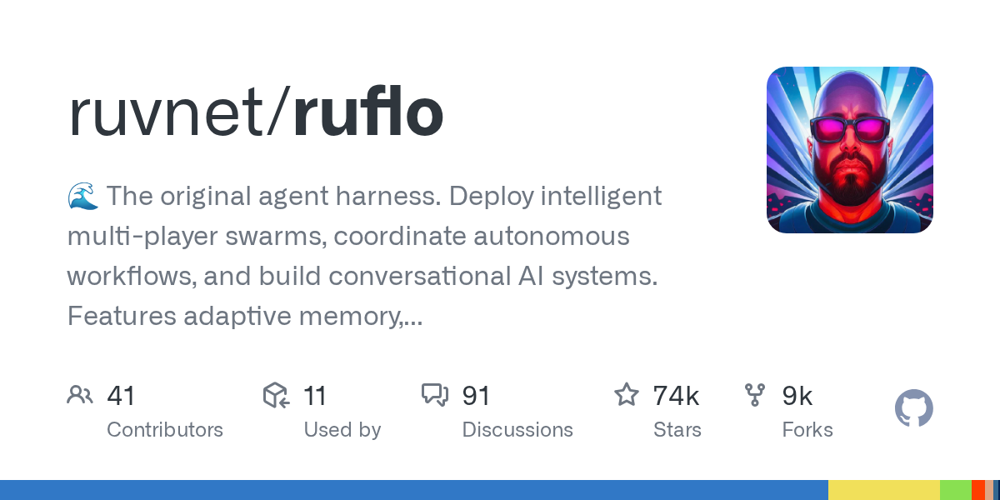

01 GitHub
ruvnet/ruflo
AI 에이전트를 팀처럼 묶어 돌리는 운영 도구
★ 73,521이번 주 +424TypeScriptMIT 사내 사용 가능릴리스 v3.48.0 (09.28)최근 활동 09.29테스트 있음예제 없음AGENTS.md 있음

이 저장소는 AI 에이전트를 여럿 묶어 협업시키는 실행 도구다. 만든 쪽은 Claude Code와 Codex에 도구, 메모리, 반복 실행, 보안 장치를 붙여 실제 작업이 돌아가게 한다고 설명한다. 설치 경로는 가벼운 플러그인 방식과 전체 기능을 넣는 CLI 방식으로 나뉜다. 이번 주에는 v3.48.0이 나왔다.
무엇을 하는 물건인가
이 도구는 여러 AI 에이전트agent — 목표를 받아 도구를 써서 작업을 수행하는 AI 구성에게 역할을 나눠 주고, 서로 협업하게 만드는 운영 도구다. 작업을 기억하고 다음 세션에도 이어서 처리하게 돕는다. 이 도구가 없으면 사람이 창을 여러 개 띄워 놓고 각 모델에 지시를 따로 보내며 결과를 손으로 이어 붙여야 한다. 팀장 한 명이 일을 나눠 주고 기록까지 챙기던 장면을 자동화한 모습에 가깝다.
스펙과 도입 조건
- 언어는 TypeScript다.
- 설치 형태는 npm 기반 CLI와 Claude Code 플러그인이다.
- npx로 바로 시작하는 경로가 있다.
- 전역 설치도 지원한다.
- Docker 이미지는 안내돼 있지 않다.
- MCPModel Context Protocol — AI 도구 연결 규약 서버로 등록해 Claude Code에 붙일 수 있다.
- Windows는 PowerShell과 cmd에서 init wizard를 바로 쓸 수 있다.
- 라이선스는 MIT다.
- 최신 릴리스는 v3.48.0이며 2026-09-28에 공개됐다.
- 테스트는 있다.
이럴 때 쓰면 좋다
- 야간 배치 점검에서 코드 수정, 테스트, 검토를 역할별 AI에 나눠 맡기고 결과를 한 흐름으로 모을 때 쓸 수 있다.
- 고객 문의 분류와 답변 초안 작성, 근거 문서 검색을 단계별로 나눠 자동화 실험을 할 때 맞다.
- 보안팀과 개발팀이 서로 다른 서버에서 이상 거래 패턴을 나눠 보되 원문 개인정보는 밖으로 내보내지 않게 설계할 때 참고할 만하다.
핵심 기능
- 100개 이상 전문 에이전트를 묶어 작업을 분담한다.
- 세션을 넘어 메모리를 유지하고 성공 패턴을 학습한다.
- 다른 컴퓨터의 에이전트와 암호화 채널로 협업할 수 있다.
대안 대비 차별점
이 도구는 설치 경로를 두 갈래로 나눈 점이 뚜렷하다. 플러그인 경로는 슬래시 명령 위주라 가볍다. CLI 경로는 98개 에이전트, 60개 이상 명령, 30개 기술, MCP 서버, 훅, 데몬까지 포함한다. 만든 쪽은 실제 운영 용도라면 CLI 경로를 권한다.
| 구분 | Claude Code 플러그인 | CLI 설치 |
|---|---|---|
| 제공 기능 | 슬래시 명령, 일부 기술, 플러그인별 에이전트 정의 | 전체 루프, 98개 에이전트, 60개 이상 명령, 30개 기술, MCP 서버, 훅, 데몬 |
| 작업공간 파일 | 없음 | .claude/, .claude-flow/, CLAUDE.md, helpers, settings |
| MCP 서버 등록 | ruflo-core 설치 시에만 가능 | 예 |
| 훅 설치 | 아니오 | 예 |
| 권장 용도 | 단일 플러그인 시험 | 실제 운영 환경 |
사내 도입 체크
- 외부 LLM 제공자와 연결하는 구조라 외부 API 호출 범위는 확인이 필요하다.
- 에이전트 연합 기능은 다른 컴퓨터와 통신하므로 데이터 반출 경로를 설계 단계에서 점검해야 한다.
- 메시지에서 PIIPersonally Identifiable Information — 개인을 식별할 수 있는 정보를 제거하고 감사 기록을 남긴다고 밝혔지만, 실제 차단 범위와 정책 설정값은 확인이 필요하다.
- 유지보수 주체는 RuvNet으로 적혀 있다.
- 상용 대체재 유무는 확인 필요다.
원문 정보
제목: ruvnet/ruflo
최근 활동: 2026.09.29
출처 URL: https://github.com/ruvnet/ruflo